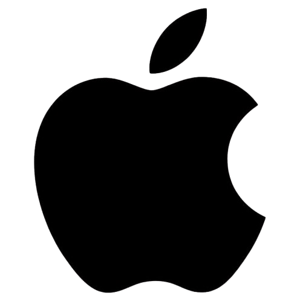

Microsoft Windows
Windows est un système d'exploitation développé
par Microsoft. Il est largement utilisé sur
les ordinateurs personnels et professionnels.
Parmi ses versions célèbres, on retrouve
Windows XP, Windows Vista, Windows 7,
Windows 10 et Windows 11.
Windows est notamment apprécié pour sa
compatibilité avec de nombreux logiciels,
périphériques et jeux vidéo.
Linux
Linux désigne une famille de systèmes
d'exploitation basés sur le noyau Linux.
Plusieurs distributions sont disponibles,
comme Ubuntu, Debian et Fedora.
Linux est très utilisé sur les serveurs,
dans le développement informatique et
dans certains appareils embarqués.
De nombreuses distributions Linux sont
gratuites et reposent sur des logiciels
libres et à code source ouvert.

Apple macOS
macOS est le système d'exploitation
développé par Apple pour ses ordinateurs Mac.
Il propose une interface graphique soignée
et une intégration avec les autres appareils
de l'écosystème Apple.
macOS est notamment utilisé dans les domaines
de la création multimédia, du développement
et de la bureautique.